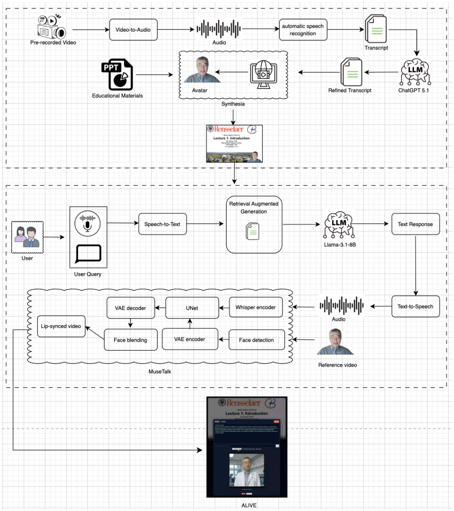
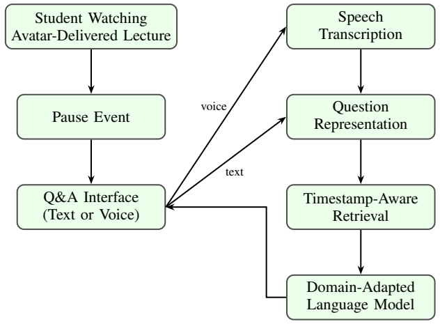
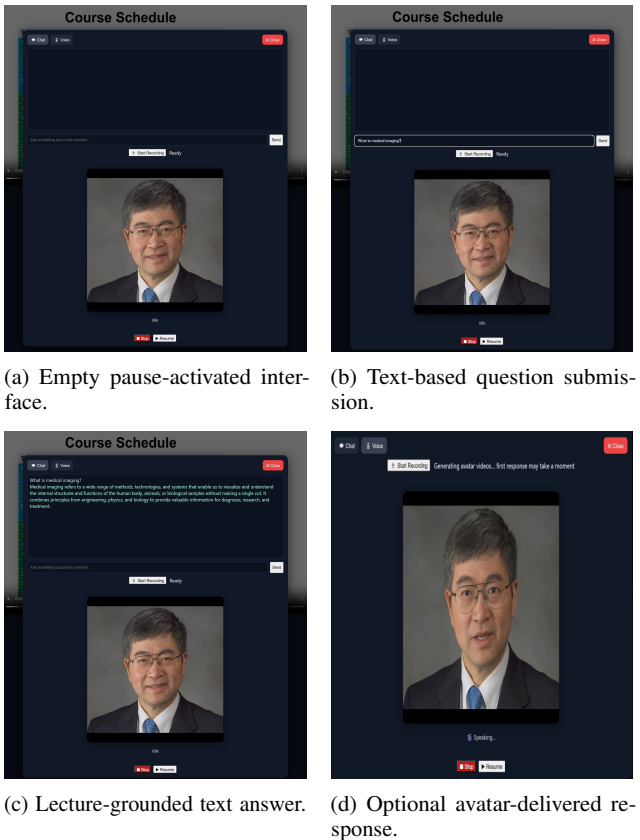
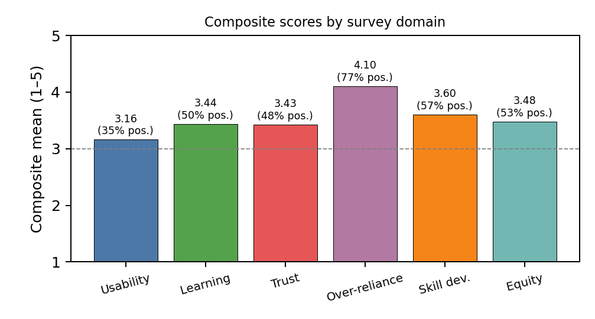

Not to be confused with ALIVE (Closed-Loop): Instructor-Governed AI for Education, which is a separate project.
Overview
Recorded lectures are flexible but passive: when a student gets confused, the only options are to rewind or leave the lecture and search elsewhere, where the explanation may use different terms and ignore what was just on the slide.
ALIVE keeps the question inside the lecture. A student pauses, asks by text or voice, and gets a short answer grounded in the slide they are looking at and the surrounding lecture material. The answer can optionally be delivered by an instructor-style talking-head avatar. Everything on the real-time path runs on institution-controlled hardware (two NVIDIA H100 GPUs).
🏗️ System Overview

Figure 1: Lecture preparation, timestamp-aware retrieval over slide-aligned content, domain-adapted LLM inference, and on-demand talking-head generation.
- Timestamp-aware retrieval: a FAISS index over slide-aligned segments plus textbook passages. A temporal term (λ = 0.4) favors evidence near the pause point.
- Domain-adapted model: Llama-3.1-8B-Instruct fine-tuned with LoRA (rank 32) on 5,207 lecture-derived QA pairs, in about 40 minutes on one H100.
- Multi-turn clarification: session-scoped dialogue history resolves follow-ups like "why?" or "explain that again", and is cleared when the lecture resumes.
- Avatar delivery: a persistent MuseTalk server with 1,348 preloaded reference frames. It runs asynchronously, so the text answer is never delayed.

Figure 2: Pause-triggered question-answering workflow.

Figure 3: The interface on pause: empty state, question entry, grounded text answer, and optional avatar response.
📊 Answer Quality
508-question open-book held-out test set, same slide context given to every model.
| Metric | Base | Base + RAG | ALIVE |
|---|---|---|---|
| BERTScore F1 | 0.737 | 0.744 | 0.769 |
| ROUGE-L | 0.422 | 0.433 | 0.476 |
| Slide-grounded factual errors | 1 / 508 | 2 / 508 | 0 / 508 |
Because the QA data were generated by the same model family that was fine-tuned, two external judges from other families were added. GPT-4o and Claude Sonnet 4.5 both rate ALIVE above the base model on all four axes (factuality, pedagogical clarity, conciseness, agreement with reference). The largest gains are in clarity and conciseness.
🔎 Retrieval Accuracy
| Method | NDCG@1 | NDCG@3 | NDCG@5 | Hit@5 |
|---|---|---|---|---|
| Semantic only | 0.300 | 0.419 | 0.469 | 0.640 |
| Timestamp-aware | 0.640 | 0.673 | 0.678 | 0.740 |
50 pause-time student questions, single-annotator ground truth; ΔNDCG@1 = +0.34, p = 1.1×10−3.
🎓 Classroom Study

Figure 4: Composite survey scores by domain (n = 31, IRB exempt). The dashed line is the neutral midpoint.
- Students rated ALIVE above the neutral midpoint in all six domains. The full 23-item battery had Cronbach's α = 0.75.
- 90.3% reported no reduction in lecture attendance, office hours, or peer study, so students used it as a supplement rather than a substitute.
- 71.0% reported increased awareness of AI limitations.
⚠️ Limitations
- Reasoning is text-only. Slide figures, equations, and medical images are not yet used.
- Retrieval labels come from one annotator.
- Avatar quality was checked internally, not in a perceptual study with multiple raters.
- No closed-book comparison yet to separate parametric knowledge from evidence use.
📝 Citation
@unpublished{islam2026alive,
title = {ALIVE: An Avatar-Lecture Interactive Video Engine with Content-Aware Retrieval for Real-Time Interaction},
author = {Islam, Md Zabirul and Manik, Md Motaleb Hossen and Marques, Oge and Mohamed, Hisham and Wang, Ge},
note = {Submitted to IEEE Transactions on Learning Technologies},
year = {2026}
}